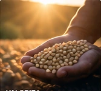
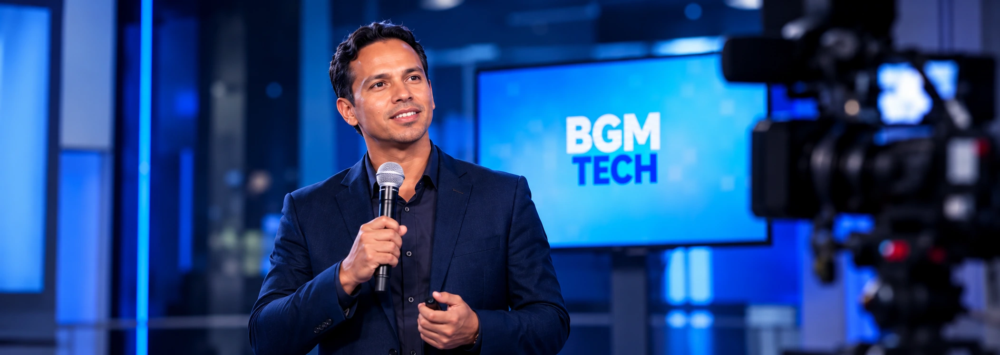
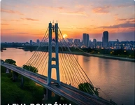
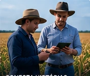
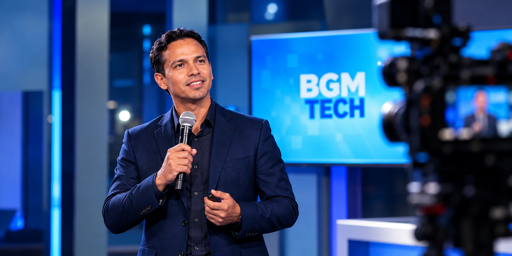

RONDÔNIAPODE CHEGAR AOSESTADOS UNIDOS
E EU QUERO LEVAR NOSSO
ECOSSISTEMA JUNTO.
Estou entre os 5 finalistas do Prêmio Aprosoja MT de Jornalismo 2026, com uma reportagem em vídeo sobre inovação no agro. No dia 19 de novembro, estarei em Cuiabá-MT para a cerimônia que pode me levar aos Estados Unidos, com o objetivo de conhecer de perto o ecossistema do agro.
Jornalismo
que conecta
o nosso estado
a novas
oportunidades.
5 finalistas
Prêmio Aprosoja MT
de Jornalismo 2026
19 de novembro
Cerimônia em
Cuiabá - MT
Possível viagem
aos Estados Unidos
Aprosoja cobre tudo
se eu for sorteado
Preciso do seu apoio agora
Para passagens e
hospedagem em Cuiabá-MT
A REPORTAGEM
INOVAÇÃO NO AGRO
QUE TRANSFORMA REALIDADES
Minha reportagem mostra como a tecnologia e a inovação estão fortalecendo a produção no campo e gerando novas oportunidades para Rondônia.
POR QUE ESSA
OPORTUNIDADE IMPORTA?
É uma chance de representar Rondônia, mostrar nossas histórias, valorizar quem produz, inovar e fazer a ponte entre o nosso estado e grandes oportunidades.
Mais do que uma premiação, é visibilidade para o nosso ecossistema e para as pessoas que fazem isso acontecer.
VALORIZAR

LEVAR RONDÔNIA
PARA NOVOS MERCADOS

CONECTAR HISTÓRIAS,
PESSOAS E NEGÓCIOS

COMO SUA EMPRESA PODE APOIAR
Estou buscando parceiros e patrocinadores que queiram associar sua marca a essa conquista, com contrapartidas em publicidade, produção de conteúdo e exposição nos meus canais.
Menção em vídeos
e reportagens
Divulgação da marca
nos meus canais
Cobertura do evento
e bastidores
Produção de conteúdo
personalizado
Associação da marca
a uma causa relevante